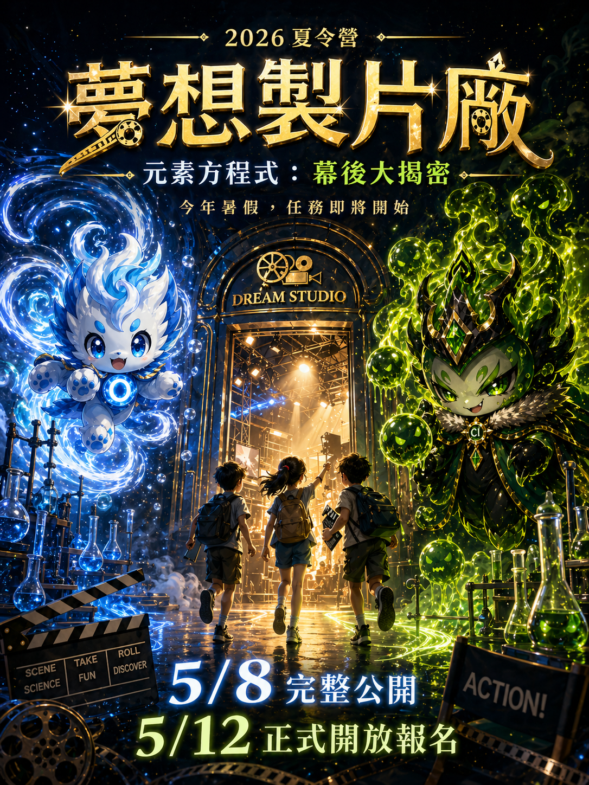
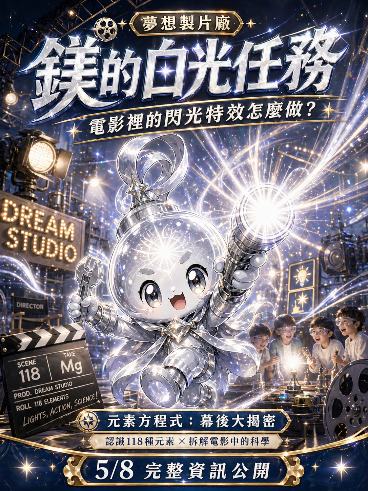
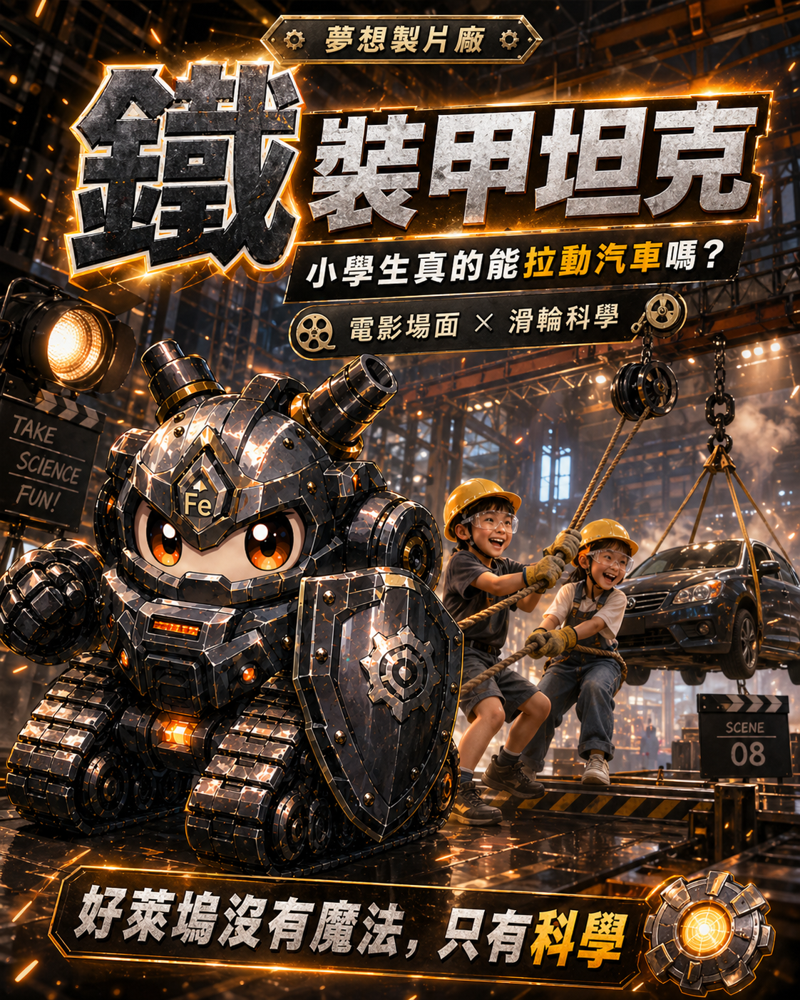
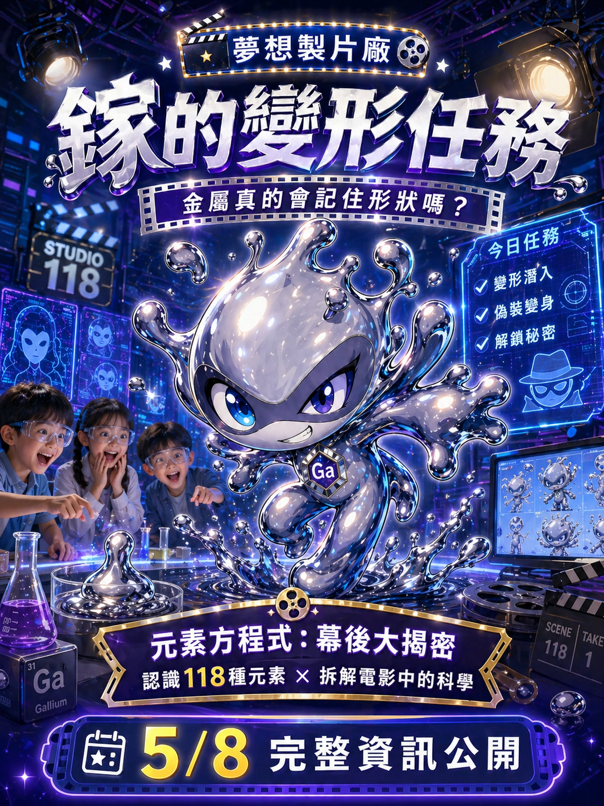
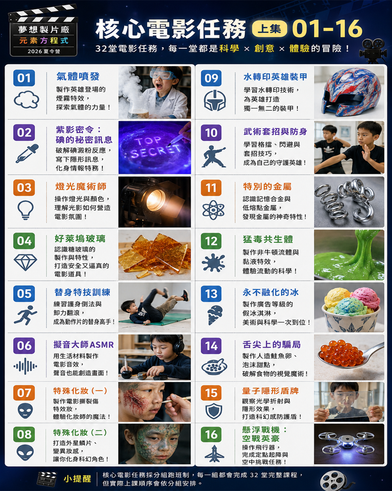
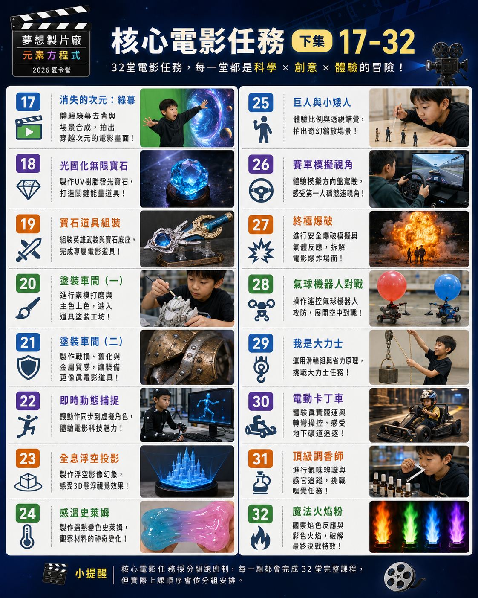
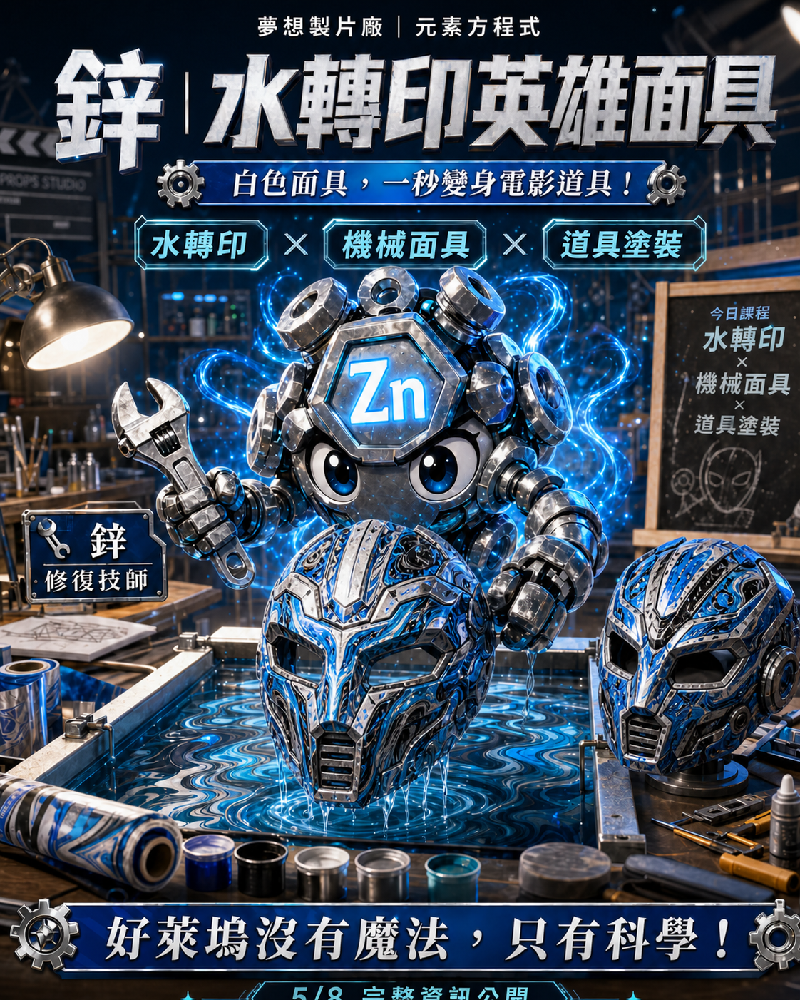

從故事與危機開始，引導孩子主動觀察、推理、提問，再用實驗完成任務。

Program Core
先進入電影，再拆解科學
每一堂課都由一段電影任務啟動，孩子看見元素角色遇到的危機，再由老師「喊卡」，帶孩子回到現場實作。
AI 電影片段
老師喊卡
科學原理揭密
動手實作
任務完成
煙霧、綠幕、糖玻璃、全息投影、特技動作與道具塗裝，都變成可理解的科學現場。
課程涵蓋化學、物理、光學、材料、感官與團隊合作，玩得投入，也學得具體。
Story World
六大元素角色，啟動一場片場冒險
故事發生在「元素城」。氧、鐵、氖、碳、氯、鎵牽動不同任務線，孩子不是觀眾，而是夢想製片廠實習製片員，要親手做出電影中的煙霧、爆破、隱形、變色、音效、道具與幻象。



32 Core Missions
32 堂核心任務，跨越電影特效與科學實作


氣體發泡、變色反應、焰色反應
從氣體噴發、猛毒共生體到魔法火焰粉，把電影畫面拆成可觀察的反應。
隱形盾牌、綠幕、全息投影
理解光線、折射與影像合成，讓看似魔法的畫面回到科學原理。
糖玻璃、英雄裝甲、寶石道具
從安全道具到塗裝舊化，孩子完成一件真正像電影道具的作品。
滑輪省力、賽車視角、動作訓練
用身體與裝置理解力、速度、卸力與場景調度。

Hands-on Studio
孩子每天完成一個「可帶走的理解」
不是只看故事，也不是只做實驗。每一個任務都把電影情境、科學原理與動手作品串在一起，讓孩子知道自己正在解決什麼問題。
- 任務解鎖元素卡，接觸 118 種元素概念。
- 完成課程任務可累積夢想幣，兌換營隊商店商品。
- 8/28 以「大中百貨公司」完成結算、消費、回顧與頒獎；最高價值商品為 Switch 2。
Dream Coin System
夢想幣制度：讓孩子自己控制錢財，學會理財方式
學生每日可獲得製片廠薪資，並在 11:00-11:30 的夢想幣時間，依照自己的目標與判斷使用金錢。孩子可以消費、投資、收集元素卡，也可以累積財富換取大獎。
每日 11:00-11:30
夢想幣商店與投資時間
商店購物
可至營隊商店購買喜愛商品，練習預算分配與取捨。
營隊股票
閱讀營隊所出版報紙後，依新聞判斷購買營隊股票。
元素卡包
可購買元素卡包，收集角色、裝備、物品與核心卡。
刮刮樂
可購買刮刮樂，體驗機率與風險，理解不是每次投入都會獲利。
Camp Plan
40 天完整流程摘要
開營典禮
夢想製片廠入職、分組、規則、夢想幣制度、元素卡說明。
核心任務
電影任務式科學主課，包含煙霧、燈光、擬音、特殊化妝、金屬、綠幕、火焰等。
週五運動選修
游泳、SUP 立槳、街舞、籃球、西洋劍、花式跳繩，作為週五身心舒展與多元體驗。
戶外探索
規劃台中歌劇院／美術館／臺灣音樂文化園區；另設加價方案：冷研探索館(7/17)、義大 x 海生館 x 駁二三天兩夜(8/5-8/7)、小人國(8/14)。
小暑假休假
補習班休假，不排夏令營、不排運動選修、不排戶外活動。
大中百貨公司
夢想幣結算、商店消費、元素卡回購、頒獎、成果回顧與結業收尾；累積夢想幣可兌換商品，最高價值商品為 Switch 2。
Friday Plan
週五特別企劃：運動選修與戶外課程
週五不安排上午主線電影任務，改以運動選修與戶外探索為主，讓孩子在體能、團隊合作、藝術觀察與科學體驗之間取得平衡。
7/10、7/24、8/7、8/21
每次依現場名額與安全分組安排，額滿為止。
初階游泳 15 人
進階游泳 15 人
SUP 立槳 20 人
街舞 30 人
籃球 A 20 人
籃球 B 20 人
西洋劍 20 人
花式跳繩 20 人
5/12 18:00 開放現場選課程
- 7 月：7/10、7/24 兩天可選擇其中 1 種課程參加。
- 8 月：8/7、8/21 兩天可選擇其中 1 種課程參加。
- 初階游泳／進階游泳：7 月與 8 月需選同一種。
- 其他課程：不能跨月重複選擇一樣的課程。
- 每位學生每次只能參加 1 種課程，名額有限，選滿為止。
台中歌劇院／美術館／臺灣音樂文化園區
戶外探索以城市場館、美感觀察與學習任務為主；各組前往地點將依年齡與導覽人數限制分配。
加價戶外方案與一般戶外課程擇一安排；三天兩夜行程限額 20 人。實際費用、交通、住宿、餐食與名額依報名表單及現場公告為準。
Parent FAQ